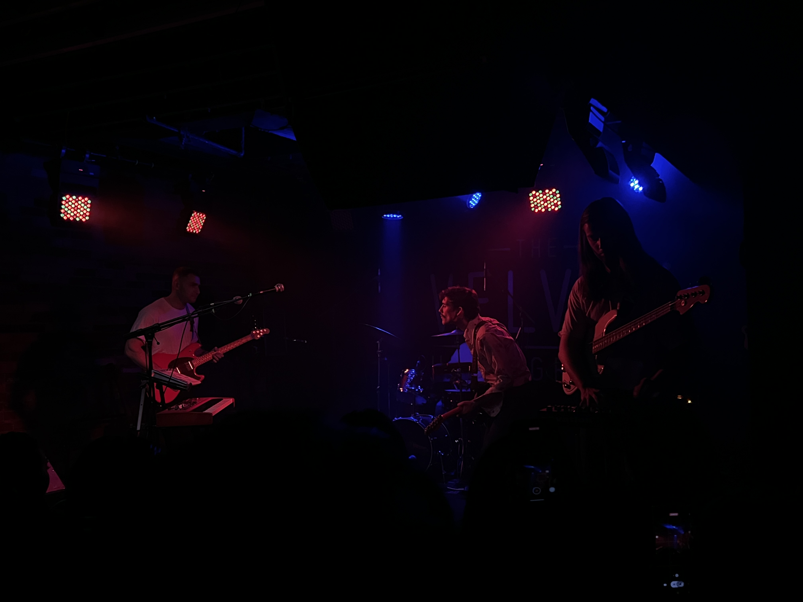
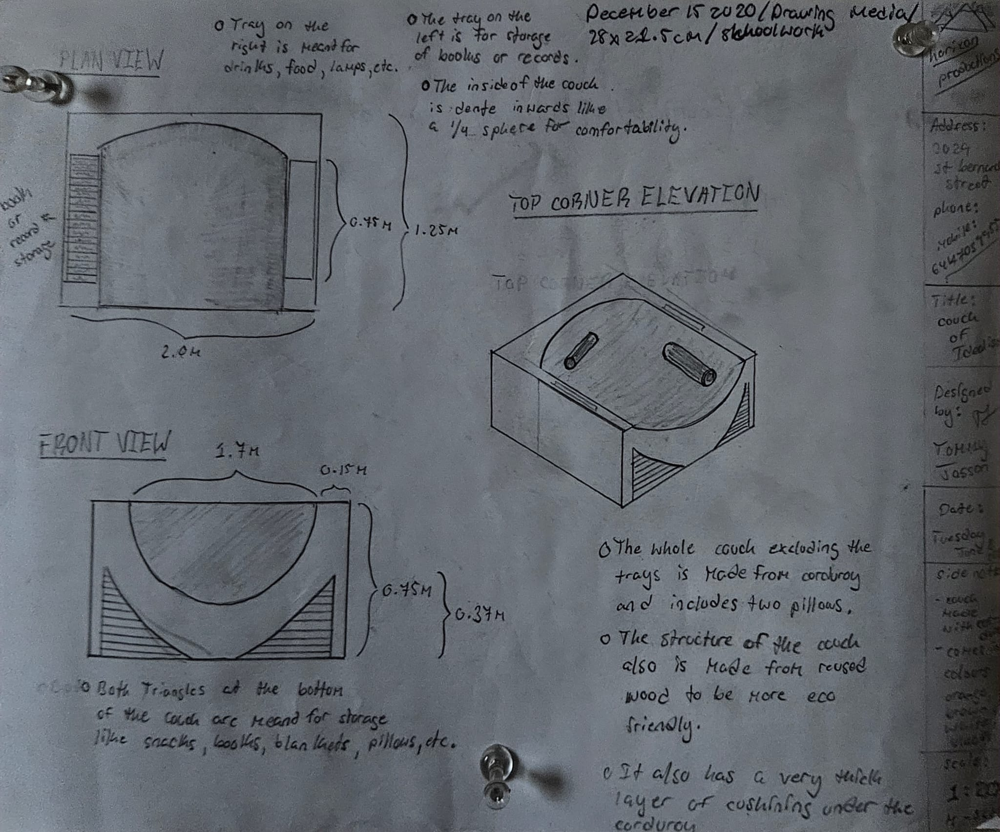
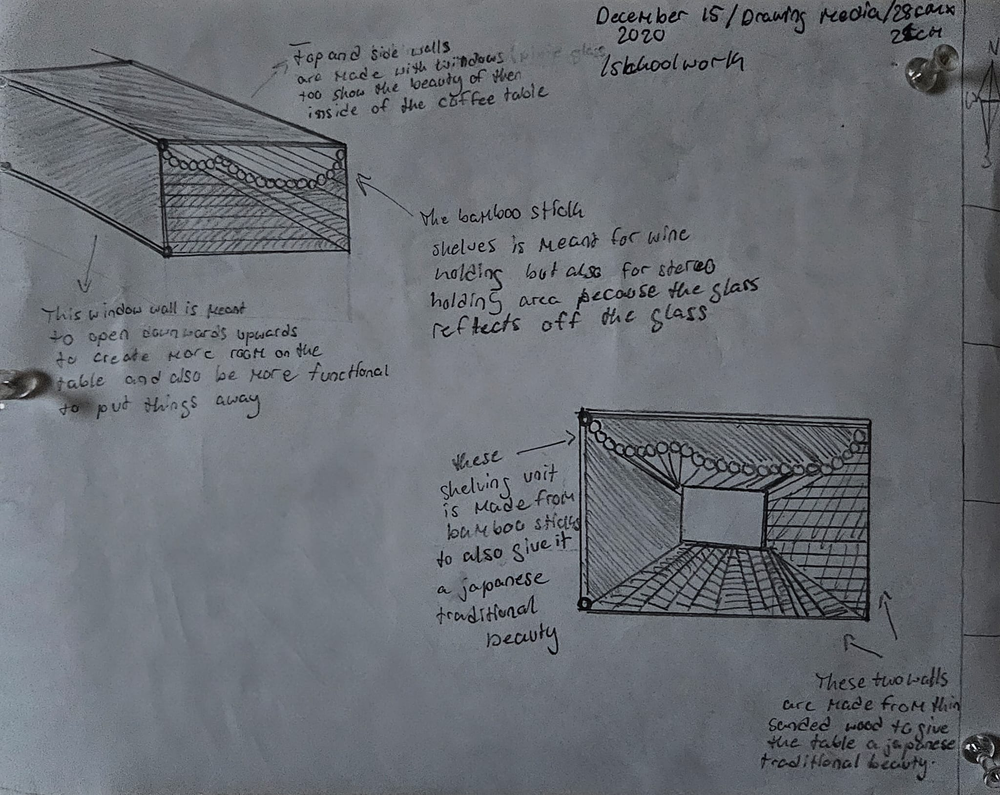
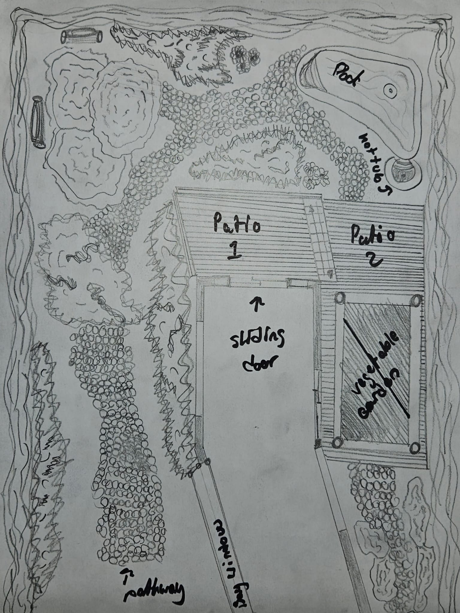

My Projects
These are projects i've worked on for a long time, these are my best pieces i believe and they are what represents what im capable of best.
| Projects | Explanation |
|---|---|
|  | Project 1: this was part of a photography project where we needed to capture an ambience of an enviroment. I took a few shots s\to try and capture the nostalgia and calm abience of the space and this demonstrates it perfectly. It's my best shot. |
|  | Project 2 This was a design of a couch. I had to make a reconstruction of a type of furniture used in a regular day-basis. I chose to recreate the couch, turning it into a pit enough for whole family's to fit while also have storage. This was my first official design piece where i got to be unique in my creation. |
|  | Project 3: This was another furniture project about designing a piece in relation of a famous designer of our choice. I made mine based on Shingo Sato, a very famouse clothing designer who loved wavy lines. To this day, this piece is my favorite because it also represents me aswell. The way i let myself flow from one idea to the next, mixing them into something new. |
|  | Project 4: In this piece, i had to create my dream backyard, design something simple aswell as practical. It the first project where i had to focus on my future. WHat i wouldve like in ten years or what i wanted in my future backyard. It allowed me to bring insight to myself about how close the future really is. |